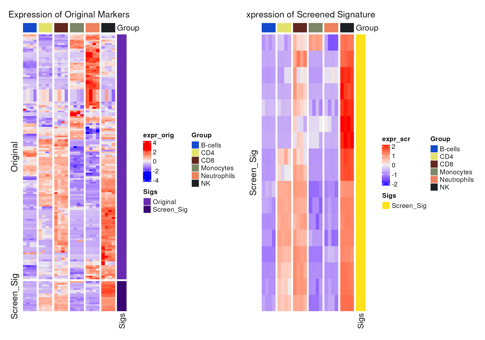
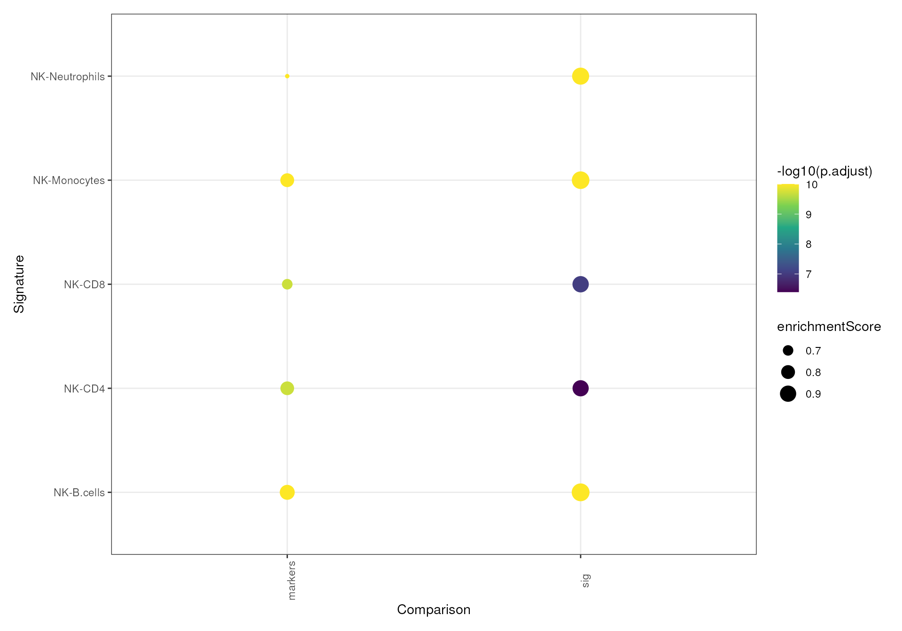

mastR: Markers Automated Screening Tool in R
Jinjin Chen
Bioinformatics Division, Walter and Eliza Hall Institute of Medical Research, Parkville, VIC 3052, AustraliaDepartment of Medical Biology, University of Melbourne, Parkville, VIC 3010, Australiachen.j@wehi.edu.au
Ahmed Mohamed
Bioinformatics Division, Walter and Eliza Hall Institute of Medical Research, Parkville, VIC 3052, Australiamohamed.a@wehi.edu.au
Chin Wee Tan
Bioinformatics Division, Walter and Eliza Hall Institute of Medical Research, Parkville, VIC 3052, Australiacwtan@wehi.edu.au
11 Apr 2023
Source:vignettes/mastR_Demo.Rmd
mastR_Demo.RmdIntroduction
Why do we need group markers
In biological and clinical research, the identification of biomarkers specific to a disease, tissue, or cell type is a critical step in advancing our understanding and application of this knowledge.
Specific biomarkers can be identified through various methods, such as transcriptomics, proteomics, or metabolomics, which can provide a global view of the molecular landscape of the system being studied.
To denote these biomarkers, we use the term “group markers” in a generic sense, referring to any molecular feature that is specific to a particular group or condition of interest.
Such markers can provide insight into disease diagnosis, prognosis, and treatment options, and can help to differentiate between diseased and healthy states. Thus the identification of the group markers is crucial in various biological and medical applications, as it allows us to distinguish between different cell types or disease states.
For example, in cancer research, identifying marker genes that are differentially expressed between cancer cells and normal cells can help diagnose and monitor the progression of the disease, as well as identify potential therapeutic targets. Similarly, in developmental biology, identifying marker genes that are specific to certain cell types or stages can help us understand the underlying mechanisms of differentiation and development.
Furthermore, marker genes can also be used in diagnostic assays to detect specific diseases or monitor treatment responses. For instance, the presence of certain marker genes in a patient’s blood or tissue sample can indicate the presence or progression of a disease.
Importance of immune cells signature in tumor micro-environment (TME)
In this demo, we will be using the example of immune cell signature in the context of the TME as a practical case study to showcase the application of our approach.
TME is made up of a diverse range of cell types (fibroblasts, epithelial cells, endothelial cells, and immune cells) as well as various extracellular components (collagens, growth factors, hormones, cytokines, etc.). Tumor immune micro-environment (TIME) is reported to be highly associated with prognosis and various treatment response to many kinds of cancers.
Recent studies have highlighted the role of immune components in the TME in modulating tumor progression, making them attractive therapeutic targets. These components make up TIME, which is a subset of the TME. Subsequently, it’s proved that tumor infiltrating lymphocytes (TILs) play an essential role in tumor progression, metastasis and treatment response.
This drives TILs to be a strong prognostic indicator for better precision therapy of cancer patients. The identification of these TILs are the subject of extensive research interest due to the roles of specific subset of immune cells acting on different tissues types.
Identification of these cell types are based on flow cytometry in the past, which has limited granularity. But now with the advance of single cell RNA-seq and spatial transcriptomics technologies, more detailed and novel cell types or subtypes can be identified. One of the key advantages of scRNA-seq and spatial technologies is the ability to investigate cell types in the TIME and understand cellular heterogeneity in the TME.
To quantify TILs infiltration (in bulk), estimate cellular composition (in bulk), annotate single cell types (in scRNA) or identify sample states/activities, many computational methods like cell deconvolution (CIBERSORTx), marker based annotation (CelliD) and sample scoring (singscore) are developed. But to distinguish between closely related cell types, estimate cell composition and states, a refined signature is required which typically requires manual curation by domain expert. With the increasing large amount of data and cell types, this is gradually getting to be untenable and will require a different approach to automatically screen such signatures.
mastR is a software package specifically designed to automatically screen signatures of interest for particular research questions. This automated process saves significant time and effort that would otherwise be required for manual labor.
What this package does
mastR, Markers Automated Screening Tool in R, is a package to automatically derive signature for specific group of interest in specific tissue.
With mastR, users can simply input their expression data containing the groups of interest, along with group labels, to obtain a list of marker genes (signature) for the target group.
While there are many tools available for generating cell
type-specific markers, they are primarily designed for scRNA-seq data
and often rely on machine learning algorithms to select relevant
features for classification. However, these methods may lack robustness
and consistency across datasets when compared to using statistical
methods like empirical Bayesian in limma. Furthermore, some
of these tools may return a signature even when the data does not
contain any, leading to potential inaccuracies.
Although differential expression (DE) analysis can also be done on
scRNA data, like Seurat::FindMarkers(), it’s reported that
DE analysis done on pseudo-bulk scRNA data is more robust and reliable
than directly done on scRNA data.
Thus, mastR is designed to generate a more refined list of signature
genes from multiple group comparisons based on the results from
edgeR and limma DE analysis workflow. The
final signature is selected by rank product score test for picking up
genes with high ranks in the most of comparisons. The rank can be
ordered by any gene statistic generated by limma analysis. Signature can
be further refined by keeping the top n DEGs in the specified
comparison(s), which can help to improve the discrimination between
fairly similar cell types.
Another unique advantage of mastR is that it takes into account the background expression of tissue-specificity, which is often ignored by other marker generation tools. Unlike most tools that only consider the genes’ contribution to the classification, mastR also offers a background expression removal function. This function is designed to remove parts of the marker genes that are highly expressed in specific tissues or cancer cells. These signals from the background, regarded as background expression, can cause potential ambiguity when applying the markers to specific tissues due to background or sample purity issues. This feature makes mastR apart and enhances the accuracy and specificity of the generated markers.
Furthermore, mastR allows users to build a markers pool before signature screening, which might contain the potential markers of interest to the users. The final signature will be integrated with this pool (by intersection), which can help to constrain the final signature within the interested pathway-related genes or functional gene-sets. People can borrow the published knowledge to build this.
The motivation of this package arises from the importance and necessity of identifying specific genes that are differentially expressed in different groups or tissues, as these genes can serve as biomarkers for diagnosis, prognosis, and therapeutic targeting. However, identifying marker genes can be a challenging and time-consuming task, and the presence of background expression can lead to erroneous results. Our package simplifies and streamlines this process, allowing researchers to focus on their analyses and interpretations without the burden of manual marker gene selection and background expression removal.
This report demonstrates the main functions and applications of mastR 0.99.4.
This report demonstrates the signature screening workflow of NK cells in colorectal cancer (CRC), assessing the results by using in-built visualization functions.
mastR screen the signature using the following 3 key steps:
step 1. build markers pool
step 2. identify signature from the pool
step 3. refine signature by background expression
step 4. visualize signature performance
Applications
- score samples
- estimate cellular proportion
- single cell annotation
Installation
mastR R package can be installed from Bioconductor or GitHub.
The most updated version of mastR is hosted on GitHub
and can be installed using devtools::install_github()
function provided by devtools.
# if (!requireNamespace("devtools", quietly = TRUE)) {
# install.packages("devtools")
# }
# if (!requireNamespace("mastR", quietly = TRUE)) {
# devtools::install_github("Gene233/mastR")
# }
if (!requireNamespace("BiocManager", quietly = TRUE)) {
install.packages("BiocManager")
}
if (!requireNamespace("mastR", quietly = TRUE)) {
BiocManager::install("mastR")
}
library(mastR)
library(ggplot2)
#> Warning: package 'ggplot2' was built under R version 4.3.0
library(GSEABase)
#> Warning: package 'GSEABase' was built under R version 4.3.0
#> Warning: package 'BiocGenerics' was built under R version 4.3.0
#> Warning: package 'Biobase' was built under R version 4.3.0
#> Warning: package 'annotate' was built under R version 4.3.0
#> Warning: package 'AnnotationDbi' was built under R version 4.3.0
#> Warning: package 'IRanges' was built under R version 4.3.0
#> Warning: package 'S4Vectors' was built under R version 4.3.0
#> Warning: package 'XML' was built under R version 4.3.0
#> Warning: package 'graph' was built under R version 4.3.0Step 1. Build Markers Pool
The first step is to define the original markers pool this analysis will be based on.
The final signature will only be the intersected genes with this markers pool. The whole gene list of the data will be regarded as the markers pool if no preliminary result or interested genes are provided.
Note: markers = NULL won’t
keep any special genes if they fail the filtration by edgeR.
If users have any preliminary knowledge about the target group type (cell type), they can build the markers pool of interest from the available datasets or build from MSigDB, PanglaoDB or LM7/LM22 using our in-built functions. All genes in the pool will be reserved for DE analysis even even if they are filtered out during the filtration of edgeR.
The standard pool building process involves the following:
- generate from sources
- LM7/22 signature matrix for CIBERSORT
- MSigDB
- PanglaoDB
- Customized gene list
- LM7/22 signature matrix for CIBERSORT
- merge gene-sets together
mastR allows the following markers to be conveniently loaded:
lm7andlm22: CIBERSORT (LM22) and Tosolini et al. (LM7) gene sets for leukocytes, get more details using?mastR::lm7or?mastR::lm22.msigdb_gobp_nk: a ‘GeneSetCollection’ object, containing gene sets with gene-set name matched to ‘NATURAL_KILLER’ in GO:BP MSigDB v7.4 database. More details?mastR::msigdb_gobp_nk.nk_markers: a combination of CIBERSORT LM7, LM22 and Huntington gene list with 114 genes. (Cursons et al. 2019).
All markers generation functions will return ‘GeneSet’ or ‘GeneSetCollection’ object.
Generate Markers from Sources
To generate the immune cell signatures, firstly users need to define a pool of markers of interest. mastR allows users to build markers pool from multiple resources.
In this demo, we will load some some publicly available example datasets.
i) Leukocyte gene signature Matrix (LM)
lm7/lm22 are immune cells signature matrices from
CIBERSORT, contains 7 or 22 immune cell types.
Users can use function get_lm_sig() to generate immune
cells markers from LM7 and/or lm22.
data("lm7", "lm22")
## collect both LM7 and LM22
LM <- get_lm_sig(lm7.pattern = "^NK", lm22.pattern = "NK cells")
LM
#> GeneSetCollection
#> names: LM7, LM22 (2 total)
#> unique identifiers: CD244, FASLG, ..., ZNF135 (92 total)
#> types in collection:
#> geneIdType: SymbolIdentifier (1 total)
#> collectionType: NullCollection (1 total)Function gsc_plot() allows visualization of an UpSetR
plot across all gene-sets.
## show upset diagram
gsc_plot(LM)
ii) MSigDB
The Molecular Signatures Database (MSigDB) is a database of annotated gene sets, typically used for pathway analysis.
Users can use get_gsc_sig() to generate a collection of
gene sets for the biological subjects of interest.
In this case, NK cell relevant gene-sets from
msigdb_gobp_nk are collected.
data("msigdb_gobp_nk")
MSig <- get_gsc_sig(
gsc = msigdb_gobp_nk,
pattern = "NATURAL_KILLER_CELL_MEDIATED"
)
MSig
#> GeneSetCollection
#> names: GOBP_NATURAL_KILLER_CELL_MEDIATED_IMMUNITY, GOBP_NATURAL_KILLER_CELL_MEDIATED_CYTOTOXICITY_DIRECTED_AGAINST_TUMOR_CELL_TARGET, ..., GOBP_POSITIVE_REGULATION_OF_NATURAL_KILLER_CELL_MEDIATED_CYTOTOXICITY (18 total)
#> unique identifiers: AP1G1, ARRB2, ..., KLRC4-KLRK1 (67 total)
#> types in collection:
#> geneIdType: SymbolIdentifier (1 total)
#> collectionType: BroadCollection (1 total)Note: data = "msigdb" allows
searching of MsigDB without loading into the environment.
species or version are optional
parameters.
Similarly, using gsc_plot() users can visualize the
overlapping gene sets.
As the gene-set names are too long, for better visualization the gene-set names are replaced with letters and shown below.
## cut gene set name within 11 characters
gsn <- setNames(names(MSig), LETTERS[seq_along(MSig)])
for (i in seq_along(MSig)) {
setName(MSig[[i]]) <- LETTERS[i]
}
## show upset diagram of collected gene-sets
gsc_plot(MSig)
gsn[c("A", "M", "D")] ## show gene-set names of top 3
#> A
#> "GOBP_NATURAL_KILLER_CELL_MEDIATED_IMMUNITY"
#> M
#> "GOBP_NATURAL_KILLER_CELL_MEDIATED_CYTOTOXICITY"
#> D
#> "GOBP_REGULATION_OF_NATURAL_KILLER_CELL_MEDIATED_IMMUNITY"There are 18 gene-sets in MSig, which is too many for visualization.
Thus, we use function merge_markers() to merge all
gene-sets into one ‘GeneSet’ object. (Note: Users can directly
use the un-merged object for subsequent analyses.)
## merge all gene sets into one
MSig <- merge_markers(MSig)
setName(MSig) <- "MSigDB"iii) PanglaoDB
PanglaoDB is a database of single cell RNA sequencing experiments with cell type markers.
Users can use get_panglao_sig() to generate markers
based on the required organs and cell types.
Functions list_panglao_organs() and
list_panglao_types() show all available organs and cell
types in PanglaoDB.
Note: This requires real-time connection to PanglaoDB, thus not run in this demo.
## show available organs on PanglaoDB
list_panglao_organs()
## show available cell types of interest organ on PanglaoDB
list_panglao_types(organ = "Immune system")
## collect all "NK cells" markers from PanglaoDB website
Panglao <- get_panglao_sig(type = "NK cells")
Panglaoiv) Customized gene list
Customized markers can be imported as a ‘GeneSet’ object.
Here we demonstrate this by loading the in-built
nk_markers markers dataset and convert it into ‘GeneSet’
object.
## show what nk_markers looks like:
data("nk_markers")
nk_markers
#> # A tibble: 114 × 4
#> HGNC_Symbol LM22 LM7 Huntington
#> <chr> <chr> <chr> <chr>
#> 1 APOBEC3G TRUE - -
#> 2 APOL6 TRUE - -
#> 3 AZU1 TRUE - -
#> 4 BPI TRUE - -
#> 5 CAMP TRUE - -
#> 6 CCL4 TRUE - -
#> 7 CCL5 TRUE - TRUE
#> 8 CCND2 TRUE - -
#> 9 CD160 TRUE - -
#> 10 CD2 TRUE - -
#> # ℹ 104 more rows
## convert NK markers into 'GeneSet' object
nk_m <- GeneSet(nk_markers$HGNC_Symbol,
geneIdType = SymbolIdentifier(),
setName = "NK_markers"
)Pool Markers from Sources
With multiple lists of markers from different sources, use
merge_markers() to merge them into one ‘GeneSet’
object.
gsc <- GeneSetCollection(c(nk_m, LM, MSig)) ## add Panglao if you run it
Markers <- merge_markers(gsc)
## upset plot
gsc_plot(gsc)
Markers
#> setName: merged_markers_pool
#> geneIds: APOBEC3G, APOL6, ..., KLRC4-KLRK1 (total: 167)
#> geneIdType: Symbol
#> collectionType: Computed
#> details: use 'details(object)'The summary of the merged list is saved as ‘longDescription’ in the output.
## to show the table summary of merged list
head(jsonlite::fromJSON(GSEABase::longDescription(Markers)))
#> Gene NK_markers LM7 LM22 MSigDB
#> 1 AP1G1 - - - TRUE
#> 2 APOBEC3G TRUE - TRUE -
#> 3 APOL6 TRUE - TRUE -
#> 4 ARRB2 - - - TRUE
#> 5 AZU1 TRUE - TRUE -
#> 6 BPI TRUE - TRUE -Now with a merged markers pool, we refine the signature genes for group specificity and tissue background removal.
Step 2. Signature Identification for Target Group
For group specificity, there are 3 main steps:
- differential expression (DE) analysis: filtration, normalization,
sample weighting and linear model fit;
- feature selection: select differentially expressed genes based on
rank product score;
- constrain selected genes within the markers pool.
Note: External data is accepted in different formats (e.g. DGEList, eSet, matrix). Input data must be raw counts or log-transformed expression data.
In this demo, we use the imported example data im_data_6
from GSE60424
(Download using GEOquery::getGEO()), consisting of immune
cells from healthy individuals.
im_data_6 is a eSet object, containing RNA-seq TMM
normalized counts data of 6 sorted immune cell types each with 4
samples. More details in ?mastR::im_data_6.
data("im_data_6")
im_data_6
#> ExpressionSet (storageMode: lockedEnvironment)
#> assayData: 50045 features, 24 samples
#> element names: exprs
#> protocolData: none
#> phenoData
#> sampleNames: GSM1479438 GSM1479439 ... GSM1479525 (24 total)
#> varLabels: title geo_accession ... years since diagnosis:ch1 (66
#> total)
#> varMetadata: labelDescription
#> featureData: none
#> experimentData: use 'experimentData(object)'
#> pubMedIds: 25314013
#> Annotation: GPL15456a) data processing
To screen signature for the group specificity, the data needs to be pre-processed.
process_data() in mastR does the End-to-End differential
expression analysis using edgeR and limma
pipeline as a single function call.
Processes under the hood:
Filter data by the given cutoff, genes with low expression will be removed by edgeR.
If data is raw counts (
normalize = TRUE), normalize data by ‘TMM’ and fit it usinglimma::voom(). Otherwise applytrendof limma on normalized data.Fit linear model.
Compute gene statistic for differential expression analysis using
limma::treat().
im_data_6 has 6 immune cell types:
table(im_data_6$`celltype:ch1`)
#>
#> B-cells CD4 CD8 Monocytes Neutrophils NK
#> 4 4 4 4 4 4process_data() requires an expression matrix and group
labels of the samples. This returns a DGEList object with
processed data.
To keep consistent with Markers, use param
gene_id to convert ENSEMBL IDs of im_data_6 to
SYMBOLs for intersection.
Refer to help(proc_data) for optional parameters.
proc_data <- process_data(
data = im_data_6,
group_col = "celltype:ch1",
target_group = "NK",
markers = geneIds(Markers),
gene_id = "ENSEMBL" ## rownames of im_data_6 is ENSEMBL ID
)
#> 'select()' returned 1:many mapping between keys and columns
#> NK-Neutrophils NK-Monocytes NK-B.cells NK-CD4 NK-CD8
#> Down 4012 3949 3146 2698 2155
#> NotSig 1492 2694 4429 5001 6201
#> Up 4945 3806 2874 2750 2093
attributes(proc_data)
#> $names
#> [1] "counts" "samples" "original_counts" "vfit"
#> [5] "tfit"
#>
#> $class
#> [1] "DGEList"
#> attr(,"package")
#> [1] "edgeR"For ease of process later in this demo, add the expression matrix ‘E’
fitted by limma::voom() as ‘voomE’ into
proc_data.
## add voom fitted expression as a new list of proc_data for use
proc_data$voomE <- proc_data$vfit$ENote:
mastR provides visualization functions to compare the data before and
after process_data() and assess the quality control (QC) by
using plot_diagnostics() and
plot_mean_var().
To assess the removal of the low quality genes, use
plot_diagnostics() to show the expression distribution, RLE
and MDS plots.
b) signature selection based on differential expression
For selection of group specific signature, pass
proc_data to select_sig() function. Genes with
high rank product score in DE results are selected.
mastR automatically determines if feature selection is required, the
default approach (feature_selection = "auto") performs rank
product scoring to select genes. But if the numbers of the result are
< 5, no feature selection will be conducted (switch to
feature_selection = "none").
## get the same result as there's permutation test for rank product
set.seed(123)
sig_ct <- select_sig(proc_data, feature_selection = "auto")
head(sig_ct)
#> GeneSetCollection
#> names: UP, DOWN (2 total)
#> unique identifiers: ENSG00000149294, ENSG00000173068, ..., ENSG00000162591 (98 total)
#> types in collection:
#> geneIdType: NullIdentifier (1 total)
#> collectionType: NullCollection (1 total)Note:
mastR also implements a feature to further optimize the
discriminative power of the signature between fairly similar groups by
using params keep.top and keep.group. More
details in help(select_sig).
Tips:
All above steps from @ref(process) to @ref(selection) for refining
group signature can be done using an integrated function
get_degs().
It will return a list of a processed data proc_data and
a ‘GeneSetCollection’ DEGs with ‘UP’ and ‘DOWN’ regulated
genes.
QC plots can also be shown by setting optional param
plot = TRUE.
c) constrain signature within markers pool
To constrain the final signature within the interested gene list,
intersect the signature genes sig_ct with the markers pool
Markers. In this demo, only the ‘UP’ regulated genes are
kept.
For consistency with Markers type, convert ENSEMBL IDs
of im_data_6 to gene SYMBOLs.
## convert ensembl IDs into symbols to match markers pool
deg_up <- mapIds(
org.Hs.eg.db::org.Hs.eg.db,
geneIds(sig_ct[["UP"]]),
"SYMBOL", "ENSEMBL"
)
#> 'select()' returned 1:1 mapping between keys and columns
deg_up <- na.omit(deg_up)
## markers specific for NK cells
m_ct <- intersect(geneIds(Markers), deg_up)
names(m_ct) <- names(deg_up)[match(m_ct, deg_up)] ## set ensembl ID as names for downstream visualization
head(m_ct)
#> ENSG00000122223 ENSG00000198821 ENSG00000172543 ENSG00000145649 ENSG00000197540
#> "CD244" "CD247" "CTSW" "GZMA" "GZMM"
#> ENSG00000100385
#> "IL2RB"Users can use pca_matrix_plot() to assess the group
separation.
Looking at the variance of PC1 shown below, it’s clear the intersected genes explain more variance in PC1 compared with all ‘UP’ DEGs.
## PCA shows clear separation of NK cells
## after intersection
pca_matrix_plot(proc_data,
features = m_ct,
group_by = "celltype.ch1",
slot = "voomE",
n = 3,
gene_id = "ENSEMBL"
) +
patchwork::plot_annotation("Intersected UP DEGs")
#> 'select()' returned 1:many mapping between keys and columns
## before intersection
pca_matrix_plot(proc_data,
features = as.vector(deg_up),
group_by = "celltype.ch1",
slot = "voomE",
n = 3,
gene_id = "ENSEMBL"
) +
patchwork::plot_annotation("All UP DEGs")
#> 'select()' returned 1:many mapping between keys and columns
Note:
Wrapper function filter_subset_sig() can complete all
processes in Step 2 using a single function. The result would be the
same.
filter_subset_sig() is helpful when users have multiple
datasets (more details in Section @ref(multi-data)). It can output the
final signature after aggregating signature lists from all datasets.
Step 3. Signature Refinement by Background Expression in Tissue
Further refinement can be achieved by eliminating genes with strong signal in the cancer cells or tissues, regarded as background expression.
mastR utilizes a signal-to-noise ratio (SNR) approach to filter out genes with low SNR values that have low discriminative power between the group of interest and the background. This removes tumor purity as a factor in the identified signature markers.
Here the signal is the expression of the signature in signal data and the noise is the expression of the signature in background data.
Two input datasets are required:
- signal data (
proc_datafrom Step 2) - background data (target context)
Note: Both of signal data and background data must be log-normalized.
The signal data should be the result generated by
process_data() function.
The refinement consists of:
- data subset
- data filtration
- markers removal
- combination with the signature
I) data subsetting
To remove genes with background expression, subset the samples based on the context. In this demo, we are looking to remove CRC-specific signal.
Here we choose to load in-built ccle_crc_5 as the
background data. The CRC adherent cell lines data is extracted
(bg_mat).
The signal data is in ‘voomE’ of proc_data and NK cells
data is extracted (sig_mat).
data("ccle_crc_5")
## subset CRC cell lines of bg data
bg_mat <- ccle_crc_5$counts[, ccle_crc_5$samples$cancer == "CRC"]
## subset all NK cells of sig data
sig_mat <- proc_data$voomE[, proc_data$samples$celltype.ch1 == "NK"]Note:
ccle_crc_5 is a DGEList object contains 5 CRC cell line
samples from CCLE.
More details for help(ccle_crc_5).
DepMap CCLE is a large database containing RSEM quantified TPM data of more than 1,000 cancer cell lines.
II) data filtration
Because SNR is computed using scaled expression across genes, low-expression genes must be removed.
In this case, sig_mat from proc_data has
already been filtered, therefore background data (bg_mat)
needs to be filtered.
bg_mat has only 5 samples, genes with logTPM > 1
within more than 2 samples are kept.
keep <- rowSums(bg_mat > 1, na.rm = TRUE) > 2
bg_mat <- bg_mat[keep, ]III) markers pool refinement
To refine the markers pool, use remove_bg_exp_mat() to
keep genes from Markers with high expression in
sig_mat and low expression in bg_mat.
This ensures the specificity of the markers minimizing the context effect.
Similarly, use gene_id to convert gene IDs of input to
the same type (SYMBOL). As sig_mat uses ENSEMBL IDs,
gene_id types have to be defined in the order:
sig_mat, bg_mat.
m_ccl <- remove_bg_exp_mat(
sig_mat = sig_mat,
bg_mat = bg_mat,
markers = geneIds(Markers),
gene_id = c("ENSEMBL", "SYMBOL")
)
#> 'select()' returned 1:many mapping between keys and columns
#> Warning in remove_bg_exp_mat(sig_mat = sig_mat, bg_mat = bg_mat, markers = geneIds(Markers), : Gene CCL4 is not in the sig_mat! So remove it!
#> Gene CCL5 is not in the sig_mat! So remove it!
#> Gene KIR2DL2 is not in the sig_mat! So remove it!
#> Gene KIR2DL5A is not in the sig_mat! So remove it!
#> Gene KIR2DS2 is not in the sig_mat! So remove it!
#> Gene KIR2DS5 is not in the sig_mat! So remove it!
#> Gene KLRA1P is not in the sig_mat! So remove it!
#> Gene LOC653757 is not in the sig_mat! So remove it!
#> Gene MGC24103 is not in the sig_mat! So remove it!
#> Gene TRDC is not in the sig_mat! So remove it!
#> Gene MGC61571 is not in the sig_mat! So remove it!
#> Gene PIK3R6 is not in the sig_mat! So remove it!
head(m_ccl)
#> [1] "IL32" "RAB27B" "STYK1" "RAB27A" "TXK" "TTC38"use CCLE as background data (optional)
Users can also use CCLE downloaded by
depmap::depmap_TPM() for the refinement.
The entire CCLE data is quite large, thus use ccle_crc_5
to construct a small pseudo-CCLE data ccle with similar
format.
ccle <- data.frame(ccle_crc_5$counts,
gene_name = rownames(ccle_crc_5),
primary_disease = "CRC"
) |>
tidyr::pivot_longer(-c(gene_name, primary_disease),
names_to = "depmap_id",
values_to = "rna_expression"
)
ccle
#> # A tibble: 95,885 × 4
#> gene_name primary_disease depmap_id rna_expression
#> <chr> <chr> <chr> <dbl>
#> 1 TSPAN6 CRC SNU283_LARGE_INTESTINE 4.91
#> 2 TSPAN6 CRC TGBC18TKB_LARGE_INTESTINE 6.05
#> 3 TSPAN6 CRC SW837_LARGE_INTESTINE 5.26
#> 4 TSPAN6 CRC SNU1040_LARGE_INTESTINE 5.16
#> 5 TSPAN6 CRC HT29_LARGE_INTESTINE 4.40
#> 6 TNMD CRC SNU283_LARGE_INTESTINE 0.176
#> 7 TNMD CRC TGBC18TKB_LARGE_INTESTINE 0
#> 8 TNMD CRC SW837_LARGE_INTESTINE 0.333
#> 9 TNMD CRC SNU1040_LARGE_INTESTINE 0.465
#> 10 TNMD CRC HT29_LARGE_INTESTINE 0
#> # ℹ 95,875 more rowsBecause ccle is a long data, subsetting needs to be done
before converting it into matrix.
In this demo, we still extract CRC adherent cell lines data from it.
## subset CRC cell lines of bg data
ccle <- ccle[ccle$primary_disease == "CRC", ]As remove_bg_exp_mat() can only accept matrix in wide
format, users can use ccle_2_wide() to convert
ccle into wide matrix.
ccle <- ccle_2_wide(ccle = ccle)
ccle[1:3, 1:3]
#> SNU283_LARGE_INTESTINE TGBC18TKB_LARGE_INTESTINE SW837_LARGE_INTESTINE
#> TSPAN6 4.9140861 6.045923 5.2570106
#> TNMD 0.1763228 0.000000 0.3334237
#> DPM1 6.9468478 6.724105 6.9242187The same filtration cutoff used in bg_mat above is used
for ccle.
keep <- rowSums(ccle > 1, na.rm = TRUE) > 2
ccle <- ccle[keep, ]Use remove_bg_exp_mat() to refine the markers pool based
on ccle. As we use ccle_crc_5 to construct
ccle, the result should be the same.
m_ccl <- remove_bg_exp_mat(
sig_mat = sig_mat,
bg_mat = ccle,
markers = geneIds(Markers),
gene_id = c("ENSEMBL", "SYMBOL")
)
#> 'select()' returned 1:many mapping between keys and columns
#> Warning in remove_bg_exp_mat(sig_mat = sig_mat, bg_mat = ccle, markers = geneIds(Markers), : Gene CCL4 is not in the sig_mat! So remove it!
#> Gene CCL5 is not in the sig_mat! So remove it!
#> Gene KIR2DL2 is not in the sig_mat! So remove it!
#> Gene KIR2DL5A is not in the sig_mat! So remove it!
#> Gene KIR2DS2 is not in the sig_mat! So remove it!
#> Gene KIR2DS5 is not in the sig_mat! So remove it!
#> Gene KLRA1P is not in the sig_mat! So remove it!
#> Gene LOC653757 is not in the sig_mat! So remove it!
#> Gene MGC24103 is not in the sig_mat! So remove it!
#> Gene TRDC is not in the sig_mat! So remove it!
#> Gene MGC61571 is not in the sig_mat! So remove it!
#> Gene PIK3R6 is not in the sig_mat! So remove it!
head(m_ccl)
#> [1] "IL32" "RAB27B" "STYK1" "RAB27A" "TXK" "TTC38"Note:
Wrapper function remove_bg_exp() can complete Step 3. I)
II) III) all using one single function.
Users can use the entire CCLE data from DepMap without loading it by
using param bg_data = 'CCLE'. More details in
help(remove_bg_exp).
IV) combination with Signature
To get the final signature with high group specificity and low
background expression, intersect the result m_ccl with the
signature m_ct we get from Step 2.
sig_NK_CRC <- intersect(m_ct, m_ccl)
head(sig_NK_CRC)
#> [1] "CD244" "CD247" "CTSW" "GZMA" "GZMM" "IL2RB"Here, if we directly use m_ct instead of
Markers as input markers for
remove_bg_exp_mat() or remove_bg_exp(),
m_ccl will already be the intersection result of the
original m_ccl and m_ct, then we can skip
this.
Step 4. Visualization of Final Results
To assess how well the refined signature can discriminate our target group from others, mastR provides the following visualization functions for different purposes:
pca_matrix_plot(): matrix of PCA plots with top n PCs. Show if the target group can be separated from other groups and how well the separation is. Users can also know how much variance has been explained by PC1 with the signature.sig_heatmap(): signature heatmap across groups and its comparison with un-refined markers pool.
Validate if the signature shows clear and differential expression pattern between the target group and others. Show if the pattern is clearer and cleaner after the refinement compared with un-refined markers pool.sig_rankdensity_plot(): rank density distribution of signature genes across groups.
Show if the signature genes are highly expressed within each sample of the target group while lowly expressed in others.sig_boxplot(): boxplot of signature expression or singscore across groups.
Test the overall performance of the whole signature when applying it for scoring, singscore is used to compute the rank score using the whole signature. The boxplot across groups can be used to test if the whole signature is powerful enough to distinguish the target group from others. Median expression of each signature gene can also be plotted.sig_scatter_plot(): scatter plot of signature scaled expression of the target group vs all other groups respectively.
Visualize the correlation of the signature between the target and other groups, the row-scaled gene expression is computed to make the scatter plot. Based on it, the co-expression correlation and signature’s specificity can be assessed.sig_gseaplot(): gene set enrichment analysis (GSEA) result display.
Validate the enrichment significance of signature in our target group compared with other groups, usingclusterProfiler::GSEA()analysis. Users can display ‘dotplot’ or gseaplot’.
Heatmap
Use sig_heatmap() function to compare the expression
pattern between the original markers pool and the final signature in
proc_data.
-
sigs: final signature (or list of multiple signatures). -
markers: original markers pool (optional).
sig_heatmap(
data = proc_data,
sigs = sig_NK_CRC,
group_col = "celltype.ch1",
markers = geneIds(Markers),
gene_id = "ENSEMBL",
slot = "voomE",
scale = "row",
show_column_den = FALSE,
show_row_den = FALSE,
show_column_names = FALSE,
show_row_names = FALSE
)
#> 'select()' returned 1:many mapping between keys and columns
#> Gene CCL4 is not in data
#> Gene CCL5 is not in data
#> Gene KIR2DL2 is not in data
#> Gene KIR2DL5A is not in data
#> Gene KIR2DS2 is not in data
#> Gene KIR2DS5 is not in data
#> Gene KLRA1P is not in data
#> Gene LOC653757 is not in data
#> Gene MGC24103 is not in data
#> Gene TRDC is not in data
#> Gene MGC61571 is not in data
#> Gene PIK3R6 is not in data
#> 'select()' returned 1:many mapping between keys and columns
The expression pattern of the signature is more distinguishable in NK cells.
Signature Score Boxplot
To see if the final signature can distinguish NK cells from other
immune cells, use sig_boxplot() function to make a boxplot
of NK scores using sig_NK_CRC. Scores are calculated by
singscore package.
Note:
Boxplot of median expression of each gene can be plotted using param
type = "expression".
sig_boxplot(
data = proc_data,
sigs = sig_NK_CRC,
group_col = "celltype.ch1",
target_group = "NK",
gene_id = "ENSEMBL",
slot = "voomE"
)
#> 'select()' returned 1:many mapping between keys and columns
It’s clear that the signature shows significantly higher score level in NK cells.
Signature Abundance Scatter Plot
To validate the specificity of the final signature to NK cells, use
sig_scatter_plot() function to make the scatter plot of the
signature z-scored expression in proc_data.
If the signature is highly specific to NK cells, most of the signature genes should appear in top left region (scaled expression > 1 in NK, < 1 in others). The genes in top right region should represent the co-expression in both groups.
## before refinement
sig_scatter_plot(
data = proc_data,
sigs = geneIds(Markers),
group_col = "celltype.ch1",
target_group = "NK",
gene_id = "ENSEMBL",
slot = "voomE"
) + ggtitle("Before Refinement")
#> 'select()' returned 1:many mapping between keys and columns
## after refinement
sig_scatter_plot(
data = proc_data,
sigs = sig_NK_CRC,
group_col = "celltype.ch1",
target_group = "NK",
gene_id = "ENSEMBL",
slot = "voomE"
) + ggtitle("After Refinement")
#> 'select()' returned 1:many mapping between keys and columns
Almost all of non-specific genes are filtered by mastR.
Further optimization can be performed by removing signature genes present in the bottom right or bottom left region based on the scatter plot.
Signature GSEA plot
To assess the enrichment significance of the final signature in NK
cells, use sig_gseaplot() function to display GSEA result.
Dotplot can be plotted by using method = "dotplot".
## gseaplot
sig_gseaplot(
data = proc_data,
sigs = list(sig = sig_NK_CRC, markers = geneIds(Markers)),
group_col = "celltype.ch1",
target_group = "NK",
gene_id = "ENSEMBL",
slot = "voomE",
method = "gseaplot"
)
The refined signature is enriched in all comparisons and mastR successfully removed the trailing tail from the markers pool.
Working with Extension Data Input
Multiple Datasets
The standard workflow of mastR usage is as described above.
The above is a show case of single dataset, mastR can also be applied to multiple datasets.
After the Step 2c (Section @ref(intersect-pool)), for:
single dataset
Returns the final result as the signature.multiple datasets
After Step 2c, choose one combination method (uniondefault) to aggregate signature lists generated from different datasets. The method Robust Rank Aggregation (“RRA”) can also be selected in mastR, which detects genes that are ranked consistently better than expected under null hypothesis of uncorrelated inputs and assigns a significance score for each gene.
Instead of integrating datasets into one larger dataset and fit it
into one linear model, mastR refines signature in each dataset
independently and the aggregation method can be defined using param
comb (e.g. comb = "RRA").
The advantage of this is that it avoids over-normalizing or mis-correcting when carrying out data integration. More robust and conserved signature across datasets can be obtained. In some cases, it’s better than using “Remove Batch Effect”.
Simple combination methods like “union” and “intersect” are also
supported (e.g. comb = union).
It’s recommended to use “union” when only a few genes are refined for each dataset, while “RRA” is better for robust gene selection from large DEG lists, “intersect” is proper for highly overlapping gene lists.
Note:
All signature visualization functions in mastR support multiple
datasets. More details in help().
To demonstrate the usage on multiple datasets, im_data_6
is used as an example.
## In the demo, we just repeatedly use im_data_6 as a show case
set.seed(123)
m_ct_m <- filter_subset_sig(
data = list(A = im_data_6, B = im_data_6),
markers = geneIds(Markers),
group_col = "celltype:ch1",
target_group = "NK",
feature_selection = "auto",
dir = "UP", ## specify to keep "UP" or "DOWN" regulated genes
gene_id = "ENSEMBL",
comb = union
)The signature m_ct_m is the same as m_ct as
“union” is set as combination method.
## we will get exactly the same list
## if we choose 'union' or 'intersect' as combination
setequal(m_ct_m, m_ct)By using comb = "RRA", only the genes at the top rank
across signature lists are kept. The cutoff of “RRA” can be set with
param s_thres.
## but we will only get the genes appear at top rank across gene lists
## if we choose 'RRA', s_thres is to determine the threshold for ranking score
set.seed(123)
m_ct_m <- filter_subset_sig(
data = list(A = im_data_6, B = im_data_6),
markers = geneIds(Markers),
group_col = "celltype:ch1",
target_group = "NK",
feature_selection = "auto",
dir = "UP", ## specify to keep "UP" or "DOWN" regulated genes
gene_id = "ENSEMBL",
comb = "RRA", ## change this to use different strategy, default is "union"
s_thres = 0.5 ## only work when comb = "RRA", set a threshold for ranking score
)
## fewer signature genes this time
m_ct_mSingle Cell RNA-sequencing Data
Although mastR is designed for bulk RNA-seq data, in order to support
usage of abundant scRNA resources, mastR provides
pseudo_samples() function to help convert scRNA-seq data
into pseudo-bulk data, which can then be used in mastR workflow.
pseudo_samples() aggregates cells into pseudo-bulk
samples according to the factor(s) provided using param by.
Then use filter_subset_sig() to get the signature from
scRNA-seq data.
## create a test scRNA object of 100 genes x 100 cells
counts <- matrix(abs(rpois(10000, 10)), 100)
rownames(counts) <- 1:100
colnames(counts) <- 1:100
meta <- data.frame(
subset = rep(c("A", "B"), 50),
level = rep(1:4, each = 25)
)
rownames(meta) <- 1:100
pb <- pseudo_samples(counts, by = meta)
pb <- edgeR::DGEList(counts = pb, group = gsub("\\..*", "", colnames(pb)))
filter_subset_sig(pb, group_col = "group", target_group = "A")
## Seurat or SCE object are also accepted
# scRNA <- SeuratObject::CreateSeuratObject(counts = counts, meta.data = meta)
# pseudo_samples(scRNA, by = c("subset","level"))Applications
Users can apply the signature in multiple ways. In this short demo, we will show 3 simple applications.
Note:
These examples are not run in this demo.
Firstly, simulate a scRNA data using splatter
package.
library(splatter)
## set seed for reproduce as there's permutation inside
set.seed(123)
sim_params <- newSplatParams(
nGenes = 1e4,
batchCells = 3000,
group.prob = seq(0.1, 0.4, length.out = 4),
de.prob = 0.01,
# de.downProb = 0, ## only set up-regulated genes for each group
de.facLoc = 0.5,
de.facScale = 0.4
)
data_sim <- splatSimulate(sim_params, method = "groups")Markers list for each group can be obtained from the simulated scRNA data.
markers_list <- lapply(
rowData(data_sim)[, paste0("DEFacGroup", 1:4)],
\(x) rownames(data_sim[x > 1])
)Use pseudo_samples() to get pseudo-bulk data and create
a DGEList.
## aggregate into pseudo-bulk samples
pb <- pseudo_samples(data_sim,
by = c("Batch", "Group"),
min.cells = 50, max.cells = 100
)
dge <- DGEList(
counts = pb,
samples = data.frame(
group = gsub(".*\\.(.*)_.*", "\\1", colnames(pb)),
Batch = gsub("(.*)\\..*", "\\1", colnames(pb)),
sampleID = gsub("(.*)_.*", "\\1", colnames(pb))
)
)Use mastR wrapper function filter_subset_sig() to get
the signature for each group. In this case, there are no markers pool of
interest and no background.
set.seed(123)
sig_ls <- lapply(paste0("Group", 1:4), \(x) {
filter_subset_sig(
data = dge,
markers = NULL,
group_col = "group",
target_group = x
)
})
names(sig_ls) <- paste0("Group", 1:4)Show the overlap of the signature lists generated by mastR and the markers lists from the simulation.
## venn plot
p <- lapply(1:4, \(i) ggvenn::ggvenn(
list(
sig = sig_ls[[i]],
marker = markers_list[[i]]
),
show_percentage = FALSE
) +
ggtitle(names(sig_ls)[i]))
patchwork::wrap_plots(p)Use sig_heatmap() to compare the expression of
signatures and markers lists.
## heatmap
sig_heatmap(
cpm(dge, log = TRUE),
sigs = c(sig_ls, list("TP53")), ## add a real gene to pass gene check
group_col = dge$samples$group,
scale = "row",
show_column_den = FALSE,
show_row_den = FALSE,
cluster_column_slices = FALSE,
cluster_row_slices = FALSE
)Randomly aggregate scRNA data to generate pseudo bulk data for scoring and deconvolution.
library(dplyr)
## randomly generate aggregating idx
set.seed(123)
data_sim$rand_idx <- sample.int(30, ncol(data_sim), replace = TRUE)
## aggregate into pseudo-bulk samples based on rand_idx
pb_r <- pseudo_samples(data_sim, by = c("Batch", "rand_idx"))
dge_r <- DGEList(
counts = pb_r,
samples = data.frame(
group = gsub(".*\\.(.*)_.*", "\\1", colnames(pb_r)),
Batch = gsub("(.*)\\..*", "\\1", colnames(pb_r)),
sampleID = gsub("(.*)_.*", "\\1", colnames(pb_r))
)
)Cellular proportion can be added into the random pseudo bulk data.
## append cellular composition
tmp <- as.data.frame(colData(data_sim)) |>
group_by(rand_idx, Group) |>
summarise(count = n()) |>
pivot_wider(names_from = Group, values_from = count) |>
mutate(rand_idx = factor(rand_idx))
tmp[, -1] <- signif(tmp[, -1] / rowSums(tmp[, -1]), 2)
dge_r$samples <- left_join(dge_r$samples, tmp, by = c("group" = "rand_idx"))
## data process
keep <- filterByExpr(dge_r)
dge_r <- dge_r[keep, , keep.lib.sizes = FALSE]
dge_r <- calcNormFactors(dge_r, method = "TMM")Score
Multiple scores are calculated by singscore package
using signatures and markers lists. Make scatter plot to compare the
correlation between the score and the actual cellular proportion.
For signatures generated by mastR:
library(singscore)
rank_data <- rankGenes(edgeR::cpm(dge_r, log = TRUE))
## score based on sig_ls
scores <- multiScore(rank_data, upSetColc = gls2gsc(sig_ls))
tmp <- pivot_longer(cbind(Sample = colnames(dge_r), dge_r$samples[, 6:9]),
-Sample,
names_to = "Group", values_to = "Prop"
)
tmp <- t(scores$Scores) |>
data.frame(Sample = colnames(scores$Scores)) |>
pivot_longer(-Sample, names_to = "Group", values_to = "Score") |>
left_join(tmp)
ggplot(tmp, aes(x = Prop, y = Score, col = Group)) +
geom_point() +
facet_wrap(~Group, scales = "free") +
ggpubr::stat_cor() +
theme_classic()For markers list from simulation:
## score based on markers_list
scores <- multiScore(rank_data, upSetColc = gls2gsc(markers_list))
tmp <- pivot_longer(cbind(Sample = colnames(dge_r), dge_r$samples[, 6:9]),
-Sample,
names_to = "Group", values_to = "Prop"
)
tmp$Group <- paste0("DEFac", tmp$Group)
tmp <- t(scores$Scores) |>
data.frame(Sample = colnames(scores$Scores)) |>
pivot_longer(-Sample, names_to = "Group", values_to = "Score") |>
left_join(tmp)
ggplot(tmp, aes(x = Prop, y = Score, col = Group)) +
geom_point() +
facet_wrap(~Group, scales = "free") +
ggpubr::stat_cor() +
theme_classic()Deconvolution
Use the DWLS package for cellular deconvolution.
Subset the scRNA reference data using the generated signatures and build its signature profile. Cellular proportion can be estimated from this.
Annotation
Use singscore as a marker-based annotation method.
Calculate the scores based on the signatures and markers lists, then
assign each cell with the cell type having the highest score. Compare
the results.
Using signatures:
library(singscore)
## normalization
data_sim <- scuttle::computePooledFactors(data_sim, clusters = data_sim$Group)
data_sim <- scuttle::logNormCounts(data_sim)
## use singscore for annotation
rank_data <- rankGenes(logcounts(data_sim))
## score using sig_ls
scores <- multiScore(rank_data, upSetColc = gls2gsc(sig_ls))
data_sim$Pred <- paste0("Group", apply(scores$Scores, 2, which.max))
table(data_sim$Pred == data_sim$Group)Using markers lists:
## score using markers_list
scores <- multiScore(rank_data, upSetColc = gls2gsc(markers_list))
data_sim$Pred <- paste0("Group", apply(scores$Scores, 2, which.max))
table(data_sim$Pred == data_sim$Group)Session Info
sessionInfo()
#> R version 4.2.3 (2023-03-15)
#> Platform: x86_64-pc-linux-gnu (64-bit)
#> Running under: Ubuntu 22.04.2 LTS
#>
#> Matrix products: default
#> BLAS: /usr/lib/x86_64-linux-gnu/openblas-pthread/libblas.so.3
#> LAPACK: /usr/lib/x86_64-linux-gnu/openblas-pthread/libopenblasp-r0.3.20.so
#>
#> locale:
#> [1] LC_CTYPE=en_US.UTF-8 LC_NUMERIC=C
#> [3] LC_TIME=en_US.UTF-8 LC_COLLATE=en_US.UTF-8
#> [5] LC_MONETARY=en_US.UTF-8 LC_MESSAGES=en_US.UTF-8
#> [7] LC_PAPER=en_US.UTF-8 LC_NAME=C
#> [9] LC_ADDRESS=C LC_TELEPHONE=C
#> [11] LC_MEASUREMENT=en_US.UTF-8 LC_IDENTIFICATION=C
#>
#> attached base packages:
#> [1] stats4 stats graphics grDevices utils datasets methods
#> [8] base
#>
#> other attached packages:
#> [1] GSEABase_1.61.1 graph_1.77.3 annotate_1.77.0
#> [4] XML_3.99-0.14 AnnotationDbi_1.61.2 IRanges_2.33.0
#> [7] S4Vectors_0.37.4 Biobase_2.59.0 BiocGenerics_0.45.3
#> [10] ggplot2_3.4.2 mastR_0.99.4
#>
#> loaded via a namespace (and not attached):
#> [1] shadowtext_0.1.2 backports_1.4.1
#> [3] circlize_0.4.15 fastmatch_1.1-3
#> [5] systemfonts_1.0.4 igraph_1.4.1
#> [7] plyr_1.8.8 lazyeval_0.2.2
#> [9] sp_1.6-0 splines_4.2.3
#> [11] BiocParallel_1.33.12 listenv_0.9.0
#> [13] GenomeInfoDb_1.35.16 msigdb_1.7.0
#> [15] digest_0.6.31 yulab.utils_0.0.6
#> [17] foreach_1.5.2 htmltools_0.5.5
#> [19] GOSemSim_2.25.0 viridis_0.6.2
#> [21] GO.db_3.17.0 fansi_1.0.4
#> [23] magrittr_2.0.3 memoise_2.0.1
#> [25] cluster_2.1.4 doParallel_1.0.17
#> [27] limma_3.55.6 graphlayouts_0.8.4
#> [29] ComplexHeatmap_2.15.3 globals_0.16.2
#> [31] Biostrings_2.67.2 matrixStats_0.63.0
#> [33] pkgdown_2.0.7 enrichplot_1.19.2
#> [35] colorspace_2.1-0 ggrepel_0.9.3
#> [37] blob_1.2.4 textshaping_0.3.6
#> [39] xfun_0.38 dplyr_1.1.1
#> [41] crayon_1.5.2 RCurl_1.98-1.12
#> [43] jsonlite_1.8.4 scatterpie_0.1.8
#> [45] progressr_0.13.0 ape_5.7-1
#> [47] iterators_1.0.14 glue_1.6.2
#> [49] polyclip_1.10-4 gtable_0.3.3
#> [51] zlibbioc_1.45.0 XVector_0.39.0
#> [53] UpSetR_1.4.0 GetoptLong_1.0.5
#> [55] DelayedArray_0.25.0 car_3.1-2
#> [57] future.apply_1.10.0 shape_1.4.6
#> [59] SingleCellExperiment_1.21.1 abind_1.4-5
#> [61] scales_1.2.1 DOSE_3.25.0
#> [63] DBI_1.1.3 edgeR_3.41.6
#> [65] rstatix_0.7.2 Rcpp_1.0.10
#> [67] viridisLite_0.4.1 xtable_1.8-4
#> [69] clue_0.3-64 tidytree_0.4.2
#> [71] gridGraphics_0.5-1 bit_4.0.5
#> [73] httr_1.4.5 fgsea_1.25.0
#> [75] RColorBrewer_1.1-3 pkgconfig_2.0.3
#> [77] farver_2.1.1 sass_0.4.5
#> [79] locfit_1.5-9.7 utf8_1.2.3
#> [81] ggplotify_0.1.0 tidyselect_1.2.0
#> [83] labeling_0.4.2 rlang_1.1.0
#> [85] reshape2_1.4.4 munsell_0.5.0
#> [87] tools_4.2.3 cachem_1.0.7
#> [89] downloader_0.4 cli_3.6.1
#> [91] generics_0.1.3 RSQLite_2.3.1
#> [93] gson_0.1.0 broom_1.0.4
#> [95] evaluate_0.20 stringr_1.5.0
#> [97] fastmap_1.1.1 yaml_2.3.7
#> [99] ragg_1.2.5 ggtree_3.7.1
#> [101] org.Hs.eg.db_3.17.0 knitr_1.42
#> [103] bit64_4.0.5 fs_1.6.1
#> [105] tidygraph_1.2.3 purrr_1.0.1
#> [107] ggraph_2.1.0 KEGGREST_1.39.0
#> [109] nlme_3.1-162 future_1.32.0
#> [111] aplot_0.1.10 compiler_4.2.3
#> [113] png_0.1-8 ggsignif_0.6.4
#> [115] treeio_1.23.1 tweenr_2.0.2
#> [117] tibble_3.2.1 bslib_0.4.2
#> [119] stringi_1.7.12 highr_0.10
#> [121] desc_1.4.2 lattice_0.21-8
#> [123] Matrix_1.5-4 vctrs_0.6.1
#> [125] pillar_1.9.0 lifecycle_1.0.3
#> [127] jquerylib_0.1.4 GlobalOptions_0.1.2
#> [129] data.table_1.14.8 cowplot_1.1.1
#> [131] bitops_1.0-7 patchwork_1.1.2
#> [133] GenomicRanges_1.51.4 qvalue_2.31.1
#> [135] R6_2.5.1 gridExtra_2.3
#> [137] parallelly_1.35.0 codetools_0.2-19
#> [139] MASS_7.3-58.3 SummarizedExperiment_1.29.1
#> [141] rprojroot_2.0.3 rjson_0.2.21
#> [143] withr_2.5.0 SeuratObject_4.1.3
#> [145] GenomeInfoDbData_1.2.10 parallel_4.2.3
#> [147] clusterProfiler_4.7.1 ggfun_0.0.9
#> [149] grid_4.2.3 tidyr_1.3.0
#> [151] HDO.db_0.99.1 rmarkdown_2.21
#> [153] MatrixGenerics_1.11.1 carData_3.0-5
#> [155] singscore_1.19.1 ggpubr_0.6.0
#> [157] ggforce_0.4.1